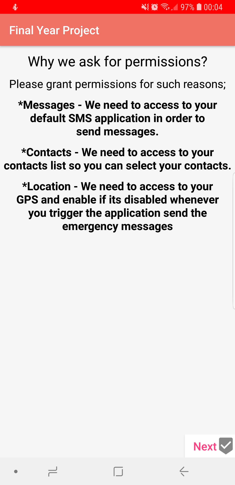
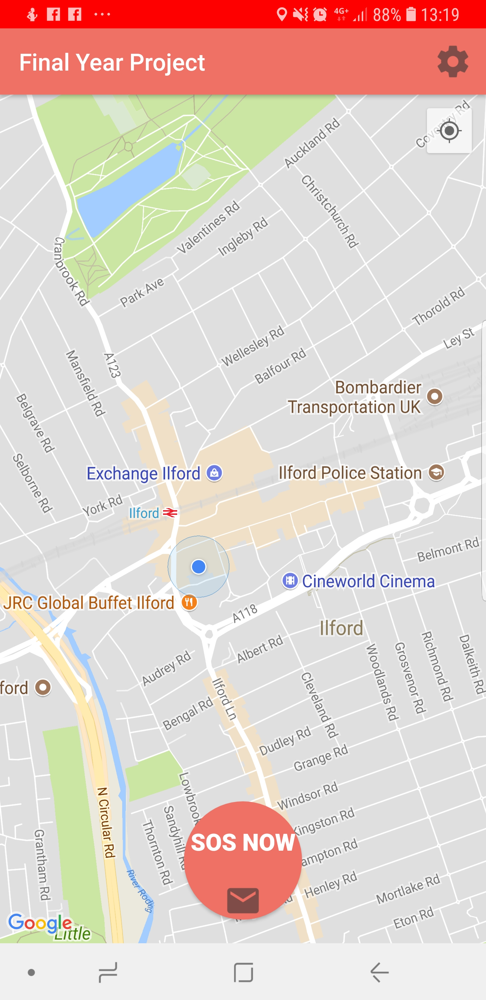
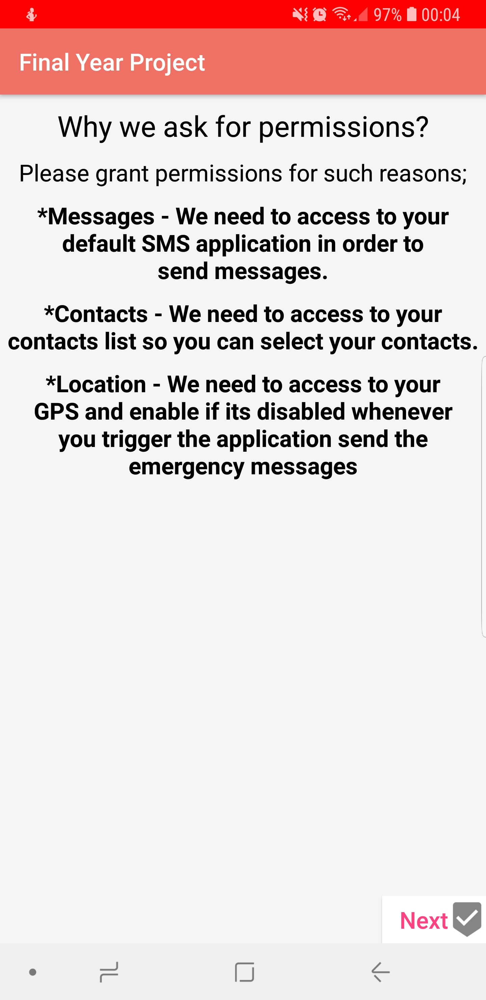
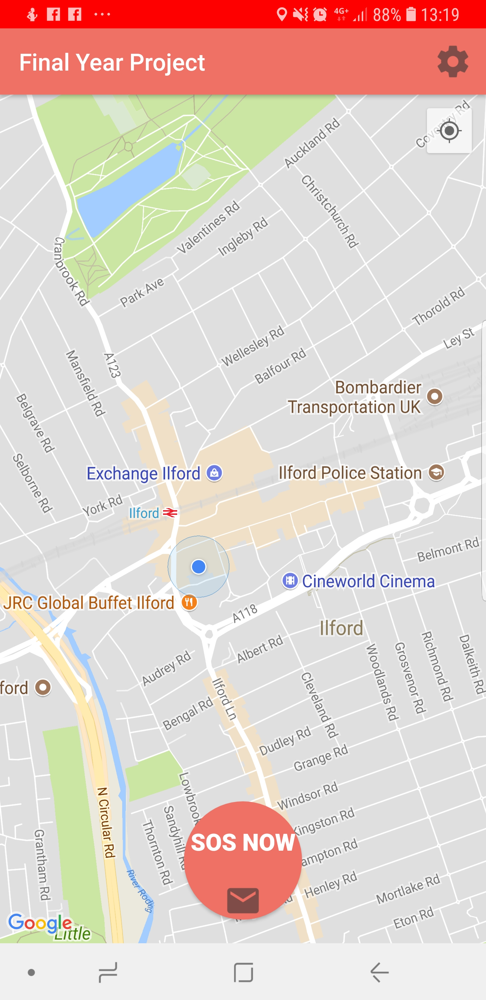

SOS Contact
 



Overview
This is an Android application that allows users to send an SOS message via SMS automatically integrated with a Fall-Back Mechanism. The application contains such services;
- Allows the user to send the SOS message by clicking on a notification
- Once the initial message is sent, update messages within every interval will be sent including updated location as suppose to 'tracking'
- Initiate Fall-Back Mechanism if the initial message couldn't be sent for such reasons using Wi-Fi to send via Whatsapp or P2P connection to build notification on peer's device.
Technologies
- JAVA
- XML
- SQLITE
Resources
The project is online at Github.